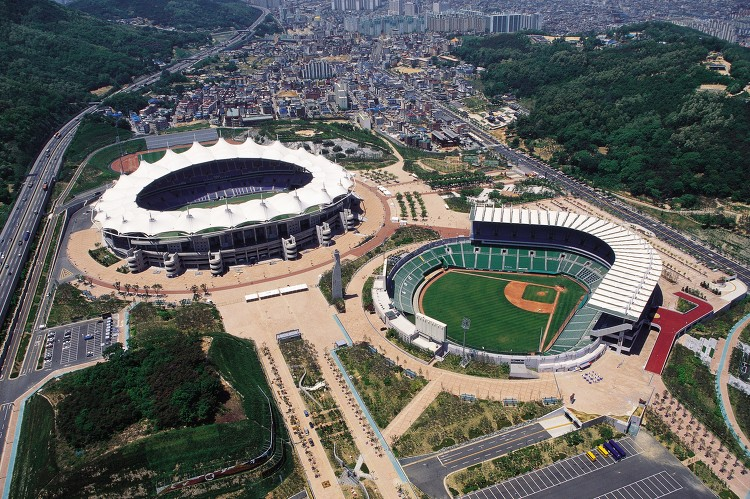
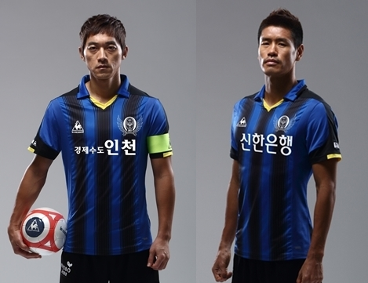
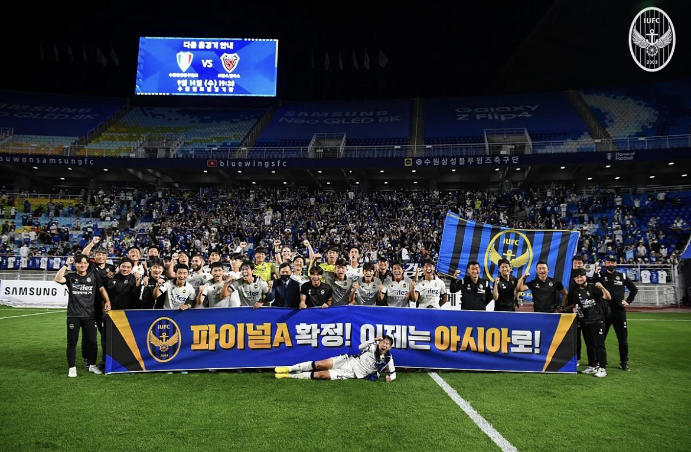

연혁
구단 정식 창단 발표 (2003)
- 제 1대 안상수 명예 구단주 취임
- (주)인천시민 프로축구단 법인 설립
- 구단 공식 명칭 ‘인천유나이티드’ 확정
- 제 1차 시민주 공모
인천축구지대본 (2013)
- 현대오일뱅크 K리그 클래식 2013 상위스플릿 진출
- 인천유나이티드 주주명판 및 주주동산 건립
- 창단 10주년 기념 경기 개최(2013년 10월 6일, 인천유나이티드 vs FC서울)
- 현대오일뱅크 K리그 2013 A그룹(통합 7위)
인천, 한계를 돌파하라 (2023)
- 하나원큐 K리그 1 2023 파이널 A 진출 최종 순위 5위
- 제르소 하나원큐 K리그 1 2023 베스트 11 미드필더 부문 수상
- 창단 첫 AFC 아시아챔피언스리그(ACL) 참가(G조 3위, 4승 2패)

인천의 옛 홈구장

10주년 기념 유니폼

2023 파이널 스플릿 A 진출